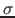

Substitutions can be represented as substitution variables, denoted with the tag # and an upper-case identifier. They are indexed as #S: g |- h, where #S is a substitution variable which stands from mapping with domain g and range h. Substitution variables are associated with a substitution closure just as contextual variables are associated with a delayed substitution. A substitution closure specifies the substitution to be applied to the substitution variable itself, written with brackets [ ] after the substitution variable as #S[
] where is the closure substitution. Closure substitutions are encoded with the same tokens as delayed substitutions for meta-variables.
Note that the parameter variable #id, the meta-variable Id, and the substitution variable #Id are all unrelated. The case of the identifier and the presence of the tag # are merely syntactic devices to distinguish variable types.
Research Group COMPLOGIC
2015-01-27